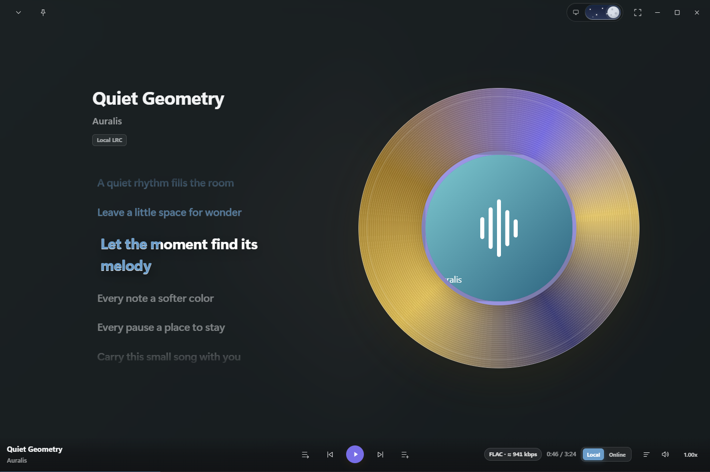
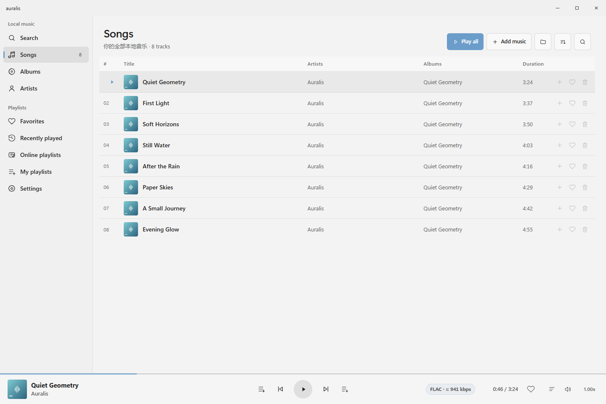
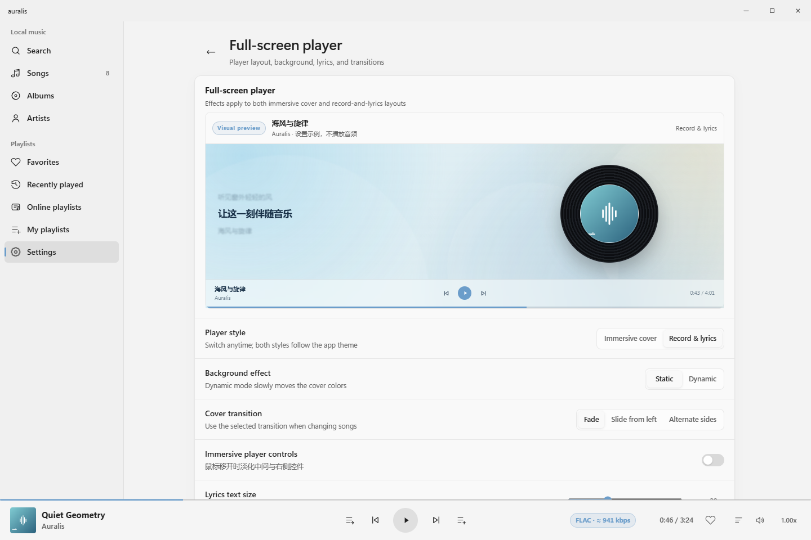

A collection that is yours.
Browse songs, albums and artists. Keep favorites close, return to recent listens, and bring your own selections together in playlists.
FLUENT BY DESIGN. PERSONAL BY NATURE.
A little less interface. A little more feeling.
A Windows player built around the music you love.
Windows 10 / 11 · Open source · Local-first

A FAMILIAR FEELING. A FRESH PERSPECTIVE.
Your collection, thoughtfully arranged. Your music, always within reach.

Browse songs, albums and artists. Keep favorites close, return to recent listens, and bring your own selections together in playlists.
A persistent playback bar and a right-side queue keep the next track within reach. Browse freely; the same session follows you.
Familiar navigation, light and dark themes, media keys, system media controls and optional tray behavior. A desktop app that belongs on your desktop.
LESS AROUND YOU. MORE IN THE MUSIC.
Open an immersive artwork view, or settle beside a record and lyrics. Two layouts. The same music. A little more room to listen.
A quiet rhythm fills the room
Leave a little space for wonder
Let the moment find its melody
Illustrative lyric motion. Local LRC timing follows your lyric file; TXT stays readable without invented timestamps.
Available bitrate, sample rate, bit depth and channels—not just a “lossless” badge.
Local lyrics, adjustable timing, and a separate desktop lyric display.
Shared play modes, volume and progress across the library and expanded player.
YOUR PLAYER, YOUR WAY.
Choose your layout, accent and background. Refine the lyrics. Preview the result before returning to your music.
Selected accent: Blue
Light, dark and system themes. Full, reduced and system-following motion. Native window materials depend on Windows support.

THOUGHTFULLY CONNECTED. CLEANLY SEPARATED.
An expressive playback page, with dedicated components behind it.
The default backend is included. Just add your music.
01
Your library, playback pages, queue and interaction stay together in the application.
02
A dedicated component owns the media session. A default implementation is bundled.
03
Media access has its own contract, separate from both the interface and playback session.
Optional components require compatible packages, explicit trust and a restart. They run in-process, not in a security sandbox. Componentization does not mean arbitrary replacement of page layouts.
A LITTLE MORE SPACE FOR YOUR MUSIC.
Explore Auralis, read the documentation, or help shape what comes next.
Currently a source preview. A publicly trusted Windows installer is not yet available from this repository.